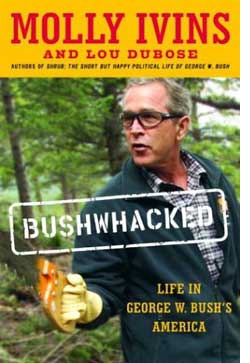

|

Bushwhacked
Good ol' boy Texas crony capitalism makes its way to Washington D.C.
- - - - - - - - - -
by Molly Ivins and Lou Dubose
In the long run, there is no capitalism without conscience; there is no wealth without character.
-- George W. Bush on Wall Street, July 9, 2002
In the long run, we are all dead.
-- John Maynard Keynes on the long run, 1924
 HERE HE WAS. On the Tuesday after a long Fourth of July weekend. In the ballroom of an ornate Wall Street hotel that once housed the New York Merchants Exchange. Standing in front of a blue-and-white backdrop with the words corporate responsibility printed over and over on it, in case you should miss the point. Promising us "a new ethic" for American business. Our president, Scourge of Corporate Misbehavior. HERE HE WAS. On the Tuesday after a long Fourth of July weekend. In the ballroom of an ornate Wall Street hotel that once housed the New York Merchants Exchange. Standing in front of a blue-and-white backdrop with the words corporate responsibility printed over and over on it, in case you should miss the point. Promising us "a new ethic" for American business. Our president, Scourge of Corporate Misbehavior.
It was like watching a whore pretend to be dean of Southern Methodist University's School of Theology. But as Luther said, hypocrisy has ample wages.
"Harken," said the Bush camp over and over, "was nothing like Enron." Interestingly enough, it was exactly like Enron in each and every feature of corporate misbehavior, except a lot smaller. A perfect miniature Enron.
By the summer of 2002, it had long been known that twelve years earlier Bush made a pile by selling his stock in Harken Energy Corporation just before it tanked. At the time, he was serving both on Harken's board and on a special audit committee looking at the company's financial health. As he spoke on Wall Street, stories were surfacing about Harken's sham sale of a subsidiary to a group of company insiders. The acquisition was financed by an $11 million loan guaranteed by the seller, Harken Energy. In other words, a fake asset swap to punch up Harken's annual profit-and-loss statement.
The "sale" of Aloha Petroleum, from Harken to Harken, was again Enron writ small and so outrageous that the SEC stepped in, declared the accounting unacceptable, and forced the company to restate its earnings. Bush unquestionably knew about the deal.
Even if he had convinced the public that earlier stories about his $848,560 insider trade, his failure to report it to the SEC, his low-interest loans from Harken to buy company stock (a practice he particularly denounced in his Wall Street speech, as though he had never heard of such an unseemly scam before), and the Enron-esque sale of Aloha Petroleum were all what he described as "recycled stuff," he was still surrounded by bad stories about to break. Enron was ripe for federal prosecution; Bush and Enron's CEO, Ken Lay, his single largest campaign contributor, had been tight for years. Halliburton was being investigated by the feds for fraudulent accounting practices put in place when Dick Cheney was CEO. Congress was investigating the secretary of the Army for his role in the collapse of Enron, in the fleecing of electricity customers in California, and for his failure to divest himself of Enron stock in a timely manner.
SEC chief Harvey Pitt had so many previous business connections with the firms he was now regulating, he had already had to recuse himself in twenty-nine cases being pursued by the SEC. Bush's hard-nosed, hard-assed political adviser, Karl Rove, had owned $108,000 in Enron stock and, more important, knew the Enron CEO because he was Bush's biggest funder. Two of Bush's economic advisers had worked as consultants for Enron. And the newly disgraced Ken Lay had convinced Bush to dump the chairman of the Federal Energy Regulatory Commission, Curtis Hebert, and to replace him with the candidate of Lay's choice, a Port Arthur, Texas, homeboy. Before giving Bush the word to dump Hebert, Lay had a come-to-Jesus session with Hebert himself, telling him to embrace free markets and deregulation or, Lay said, things would end badly for Hebert. They did.
Considering the circumstances, heckfire and brimpebbles were the best GeeDubya could manage as he wagged his fingers at Wall Street's corporate criminals. What could he say about Lay: "I never had sexual relations with that man"? What he actually said, as the cock crowed, was, "He was an Ann Richards supporter." Kenny Boy, I hardly knew ye.
The stock markets responded to Bush in July as they had to bin Laden in September. Three days after Bush's Sermon on Wall Street, the Dow Jones had lost 7.4 percent of its value and Standard & Poor's 500 was down 6.8 percent. Three weeks after the speech, with more Harken stuff breaking, the market fell 390 points in one day. It took a corporate-responsibility bill -- written entirely by Democratic senator Paul Sarbanes and vigorously opposed by Bush almost until the day it was passed unanimously by the House -- to save the president and staunch the stock market's hemorrhaging.
The Bushies naturally would have preferred to put all this "recycled stuff" behind them and return to their agenda -- including shifting Social Security funds into the stock market. But before we leave the subject, consider some wisdom from Jerry Jeff Walker, the Texas singer-songwriter. Walker met the man who inspired his first hit, "Mr. Bojangles," when they were both in jail in New Orleans. Years later, a reporter for National Public Radio asked Walker if he had worried about winding up in a drunk tank when he was in his early twenties. "No," Walker said. "It was just one time. You start worryin' when there's a pattern."
With GeeDubya Bush, M.B.A., there was a pattern. The pattern was: after he fouled up, a friend of Daddy's always showed up to bail him out. Either because Bush managed to seduce the press corps in 2000 or because Al Gore failed to raise the issue, the press started to notice Bush's business pattern only in the wake of the wrecks of Enron, Tyco, WorldCom, Adelphia, etc. As the economy contracted and stock values plummeted in mid-2002, reporters began to focus on Bush's M.O.
Bush walked away from the Texas "awl bidness" in 1990 with almost a million in cash -- after a career during which he lost more than $3 million of other people's money. Here he was advocating "a new ethic" on Wall Street despite his own business dealings, which couldn't even pass the "old ethic" test. The earlier dealings had been the subject of a pro forma investigation directed by the man President Bush the Elder appointed head of the SEC, and the investigation itself was conducted by a man who had worked as GeeDubya's personal lawyer before joining the SEC. A few of GeeDubya's deals, particularly a series of critical bailouts of his ever-sinking oil-field ventures, are truly astonishing -- not just because of the volume of dollars flowing out of Northeastern banks and disappearing in Texas but because the transactions made little or no economic sense.
A company balance sheet can be misleading. There was leaseholds, there was momentum.
 Next page | Bush didn't strike oil, he struck money from friends of his daddy Next page | Bush didn't strike oil, he struck money from friends of his daddy
1, 2, 3, 4
|